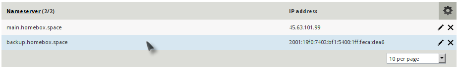
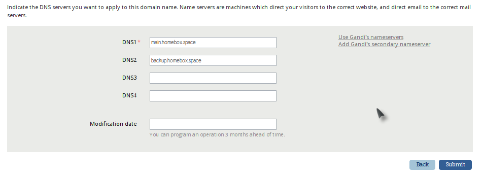
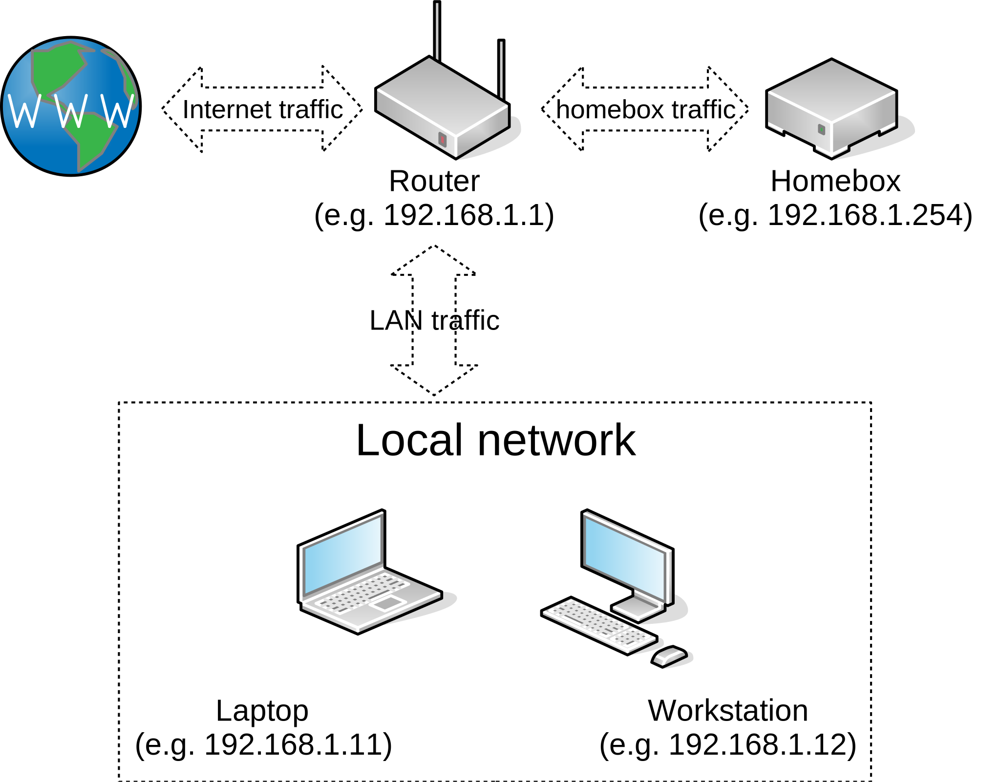

Introduction
This section will explains all the necessary steps before the installation really starts, like the DNS records or your home network set-up.
It is not a “Self hosting for newbies”, but if you follow the instructions carefully, you do not need strong technical knowledge to achieve the above.
You still need some basic understanding though, like what is an IP address or a port, how to run Ansible in a console, how to edit Yaml files, etc.
Hosting emails at home
If you want seriously host your emails at home, you will need the following:
- A static IP address from your ISP (Internet Service Provider).
- Make sure your port 25 is not blocked.
- A low power consumption hardware.
Pros:
- Better privacy,
- Cheaper if you already pay for broadband with a static IP address.
Cons:
- Your internet connection and electric providers need to be stable.
- Might be cumbersome when you are moving
Hosting emails online
Any serious hosting platform can provide a server, virtual or physical, with an externally accessible IP address. Some providers, however, are blocking the port 25 (e.g. Google cloud).
Be careful, using a VPS (Virtual Private Server) is no more secure than hosting at your home.
Pros:
- Does not rely on the reliability of your internet connection or your electricity provider
- You can move to another address easily.
Cons:
- You may not have control on the kernel installed. This is less secure than Homebox, which is by default configured to run on AppArmor.
- You will not be able to use Full Disk Encryption. Although there are some security measures in places, it is still perfectly possible to extract data from your disk without your knowledge or consent.
- You will not have the choice on when and which security updates are applied. Most hosting providers have specific time windows to update the kernel images they use, which may not be as soon as you need, or even appropriate to you.
- Might be expensive, especially if you have a lot of data.
Pre-installation steps
Set up your domain name
The first thing you need is a domain name and a DNS provider, there are many available. For instance, here a list of other DNS providers you can use.
The screenshots and examples in this tutorial are specific to Gandi, but the principles are the same.
Once you have chosen the domain name, it is necessary to configure the associated DNS servers, and the glue records.
For instance, on Gandi, you will have to set up the glue records first and then the DNS servers used for your domain:
Glue records
Create at least one record that points to your static IP address.

DNS servers
Add the DNS server accordingly

Choose the hardware
An old laptop should be enough to start, with the main advantage of being somewhat resilient to power failures. I also suggest you to have a look on this Debian page: Cheap Serverbox Hardware of the project freedombox, another excellent project.
The preseed configuration (see next step) provides an option to use software RAID, so you can use this as well if you prefer.
Warning
You still need to regularly backup your data, even if you are using RAID.
Set-up your home network
This is necessary only if you choose to use a home device to host your emails. If you are using an online server, you can skip this section.

Ideally, you will need to configure your router to redirect all the external traffic to your homebox using the “DMZ” functionality if there is one. The other option is to redirect only the ports you will need.
Initially, the following TCP ports are required:
- To obtain your certificates from LetsEncrypt, the port 80 need to be exposed.
- To test sending and receiving emails, your system should be accessible on the port 25 as well.
- To retrieve emails, your system should be accessible on ports 143, 993, 110, 995.
- To send emails, your system should be accessible on ports 587 and/or 465.
- For Thunderbird automatic configuration, your system should be accessible on port 80.
- Once installed, SOGo and the webmail are accessible through https (port 443).
The next step is to link your domain name (e.g homebox.me) to your static IP address that has been assigned to you by your ISP.
Prepare your workstation
Any workstation with a decent text editor like Emacs, Vim or even Gedit should be enough. You will need to run the Ansible scripts, and perhaps to install some packages, like rsync. I recommend using Linux, any flavour. For instance, on Debian or Ubuntu:
$ sudo apt install ansible rsync
If you already have a Debian server (Stretch) installed, and you prefer to use it, it’s fine, you can skip the next section and start the installation directly. Otherwise, click on next to read the OS installation page.